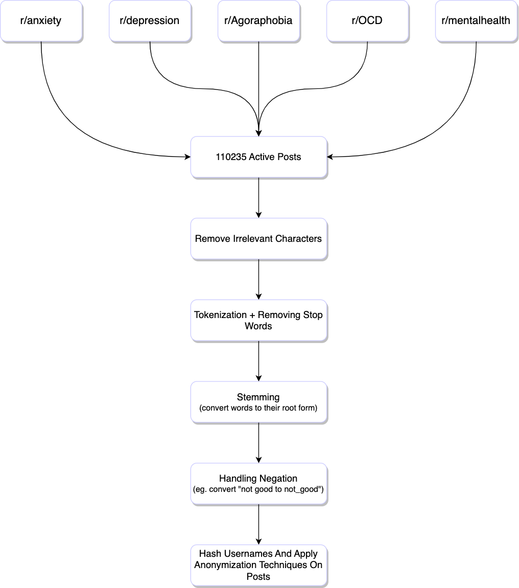

People often share their thoughts and feelings on social media. In this study, I created a deep learning model to figure out someone's mental state based on what they post online. I gathered posts from mental health communities on Reddit and analyzed them. By learning from these posts, the model was able to accurately identify if someone's post indicated a specific mental disorder like anxiety, depression, agoraphobia or OCD. The model could be really helpful in identifying people who might be struggling with mental illness. Just by looking at their posts, the model can give a clue if someone might need some extra support. Overall, this study shows how powerful deep learning can be in understanding mental health and help people who might be going through a tough time.
Reddit hosts numerous subreddits that provide a safe and anonymous space for individuals to openly discuss their mental health issues, seek advice, and offer support to others facing similar challenges.
These subreddits are highly useful for research aimed at identifying people suffering from specific mental health issues. There's a vast amount of diverse user-generated content which is useful to enhance the generalizability of any study.
Moreover people maintain a level of anonymity on Reddit, that promotes honest conversations about their struggles and experiences. This candidness is valuable because such data may not be easily accessible in traditional research settings. The data collected from these naturalistic settings can provide valuable insights into real-world experiences.
In this study I collected data from five mental health related subreddits each of which is associated with a specific disorder. I collected anxiety related data from r/anxiety, depression related data from r/depression, agoraphobia related data from r/Agoraphobia, OCD related data from r/OCD and general mental health related data from r/mentalhealth.
Note that no personally identifiable information was included in the study or stored at any point of time. I used data minimization to discard PII and keep only required data for the purpose of the study. The usernames were pseudonymized to disconnect the data from a reddit user. I also applied data generalization and data masking techniques to further anonymize the data and stored everything in a secure encrypted storage. Overall, the study collected information from 23018 users, who wrote 110237 posts in the five subreddits from January 2021 to January 2023.
The data pre-processing procedure for the collected post data is presented in Figure-1.

The primary hypothesis in this study is that, individuals who experience a particular mental health disorder tend to seek solace and support by posting on a corresponding subreddit. Consequently, all our data is already labelled into 4 distinct classes namely anxiety, depression, agoraphobia and OCD. I observed there are cases where a user suffers from multiple mental health problems, such as simultaneous depression and anxiety and posts on multiple subreddits. However, training the classification model with posts from users exhibiting multiple symptoms would introduce noise into the data and compromise the model's accuracy. To mitigate this challenge, I created four independent binary classification models, each focusing on a single symptom, thus enhancing the overall performance.
By adopting this approach and utilizing data solely from users who suffer from a specific problem, I have achieved a high degree of accuracy in identifying a user's potential mental state. For instance, to develop a depression detection model, I assigned the depression class label to posts exclusively uploaded in the r/depression subreddit, while the non-depression class encompassed posts from other subreddits.
I split the dataset into 80% training and 10% validation and 10% testing sets. In the feature extraction step, I transformed the preprocessed text data into numerical feature vectors using Word2Vec embeddings to represent words as dense vectors in a continuous space. These word embeddings can capture semantic and contextual relationships between words. The resulting embedding matrix will have a shape of (vocabulary_size, embedding_dim), where vocabulary_size represents the number of unique words in our dataset, and embedding_dim is the dimensionality of the pre-trained Word2Vec embeddings.
import torch
from gensim.models import Word2Vec
# Preprocessed text data
preprocessed_data = ...
# Train Word2Vec model
model = Word2Vec(preprocessed_data, size=100, min_count=1)
# Vocabulary size and embedding dimension
vocabulary_size = len(model.wv.vocab)
embedding_dim = model.vector_size
# Initialize the embedding matrix
embedding_matrix = torch.zeros(vocabulary_size, embedding_dim)
# Fill the embedding matrix with Word2Vec embeddings
for i, word in enumerate(model.wv.vocab):
embedding_matrix[i] = torch.tensor(model.wv[word])
# Example usage: converting a sentence to numerical feature vectors
sentence = ...
numerical_features = torch.tensor([model.wv[word] for word in sentence])
I input these embeddings into a recurrent neural network (RNN) I developed using PyTorch that uses LSTMs in the RNN layer and has a fully connected linear output layer. The number of LSTM layers was set to 3. The LSTM layer processes the input sequence, taking into account the contextual information from previous layer. This allows the model to capture dependencies and patterns in the text data.
import torch
import torch.nn as nn
# Define the LSTM-based RNN model
class RNNModel(nn.Module):
def __init__(self, input_size, hidden_size, num_layers, output_size):
super(RNNModel, self).__init__()
self.hidden_size = hidden_size
self.num_layers = num_layers
self.rnn = nn.LSTM(input_size, hidden_size, num_layers, batch_first=True)
self.fc = nn.Linear(hidden_size, output_size)
def forward(self, input_seq):
h0 = torch.zeros(self.num_layers, input_seq.size(0), self.hidden_size).to(input_seq.device)
c0 = torch.zeros(self.num_layers, input_seq.size(0), self.hidden_size).to(input_seq.device)
output, _ = self.rnn(input_seq, (h0, c0))
output = self.fc(output[:, -1, :])
return output
# Define the input parameters
input_size = embedding_dim
hidden_size = 256
num_layers = 3
output_size = 2
# Instantiate the RNN model
rnn_model = RNNModel(input_size, hidden_size, num_layers, output_size)
# Set the input sequence
input_seq = torch.randn(1, sequence_length, input_size)
# Pass the input sequence through the RNN model
output = rnn_model(input_seq)
print(output.shape)
The model achieved promising results in detecting potential mental illness based on posts from mental health-related subreddits. Specifically, the model obtained an accuracy of 93.2% for identifying potential agoraphobia cases in the r/Agoraphobia subreddit. Table-1 summarized the performance of the four binary classifiers.
| Subreddit | Class | RNN Accuracy (%) |
|---|---|---|
| r/anxiety | Anxiety | 77.9 |
| r/anxiety | Non-anxiety | 70.2 |
| r/depression | Depression | 83.1 |
| r/depression | Non-depression | 79.8 |
| r/agoraphobia | Agoraphobia | 93.2 |
| r/agoraphobia | Non-agoraphobia | 90.5 |
| r/OCD | OCD | 65.2 |
| r/OCD | Non-OCD | 69.7 |
The implications of this research are significant. By using deep learning techniques and natural language processing methods, we can effectively identify users who may be experiencing mental health issues based on their online posts. Moreover, this research indicates that the field of mental illness detection through social media is a promising area for further exploration. By leveraging the power of social media platforms, we can create spaces where individuals affected by mental disorders can interact and find support. This has the potential to address the challenges of stigma, accessibility, and reluctance to seek in-person assistance.
In conclusion, the study demonstrates the effectiveness of deep learning and natural language processing in detecting potential mental illness from online posts. By embracing these approaches and utilizing online platforms, we can proactively identify and support individuals in need of mental health services.
After the completion of the training process and the acquisition of the model's weights, all data utilized for the purposes of this study has been expunged.